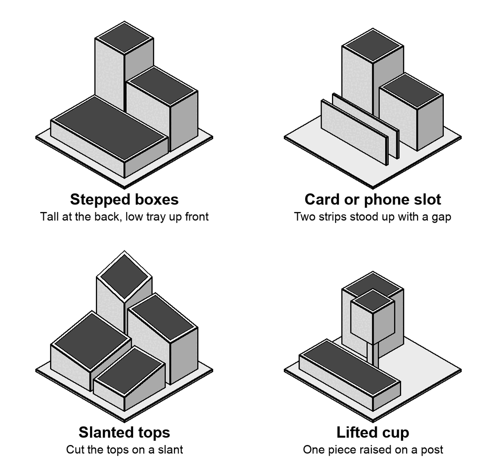

Design a desk organizer with a partner, then each of you builds your own from shop scrap on a base plate no bigger than 6 by 6 inches. Yours goes home with you.
The tool rule
You can go into the shop to hunt scrap and lay out your design. You can't touch a hand tool or a power tool, hacksaw included, until Mr. McAteer initials your Plan Page.
The rules
Base plate: 10 to 12 gauge, 6 by 6 inches max, with about 1/2 inch showing past your pieces on every edge.
At least 4 pieces standing on the base, at 3 or more different heights, rising from front to back.
Flat bar and plate count. Build boxes, slots and trays from them. Tube is fine if you find it, but you don't need it. A coped round tube is a bonus.
Scrap only, about 1/16 to 3/16 inch thick. No sheet metal. No galvanized steel: if it has a dull gray, spangled or white crusty coating, leave it and ask.
Ideas that work with flat stock

Pick one idea from two different examples and put both in your design.
Steal from these
Real organizers people built. Each one opens on the maker's own page.
Industrial pen holder Three open boxes that share walls, tall at the back, a low tray in front. Shared walls mean fewer cuts and fewer welds. etsy.com
Scrap metal project Box tops cut on a slant. It makes plain boxes look designed. pinterest.com
Offset tower One cup raised up and hung off the side of another. Height without a giant piece of stock. pinterest.com
Pencil and card holder Two short strips stood up with a gap make a slot for a phone or business cards. pinterest.com
Organizer with a cactus A small cut-out shape welded in as decoration. A CNC drop with a cool outline counts. maker-marketplace.com
Scrap desktop organizer Square tube, round pipe stubs and plate on one base, with a step by step build. cncking.com
Industrial steel organizer One long box split by divider plates into narrow slots. Square, clean corners are the whole look. coolmaterial.com
Raw steel pen holder Four plates cut at the same angle make a cup that flares at the top. Clear coat keeps the raw steel look. etsy.com
Rusty industrial organizer Long, low boxes in two steps. A simple shape with a good finish looks finished. etsy.com
Tack first. A tack is a short weld, about 1/4 inch, that holds pieces in place. Tack both ends, check it with a square, fix it, then run the full weld.
Fillet weld. Where a wall stands on the base plate, the weld fills the inside corner. That joint is called a T joint.
Outside corner weld. Where two strips meet edge to edge at a box corner, the weld fills the notch on the outside. Grind it flush after.
Weld flat. Turn the part so the seam lies flat or runs across in front of you. Build each box lying on its side, then stand it on the base.
Order of work
Pick a partner. Design together, build your own.
Pick your two ideas. Hunt the scrap bins, lay real pieces on the grid on your Plan Page, fill in the cut list, and leave it at your bench for initials.
Cut every piece on the band saw.
Build your boxes: tack, check square, weld the outside corners, grind flush.
Cut the base plate. Tack each piece down, check it, then fillet weld it.
Finish to the CV Finishing Standard: clear coat, paint or powder coat, with approval.
Grade yourself, photo it, upload to Canvas, and set it on the gallery table for the Best Weld and Most Useful vote.